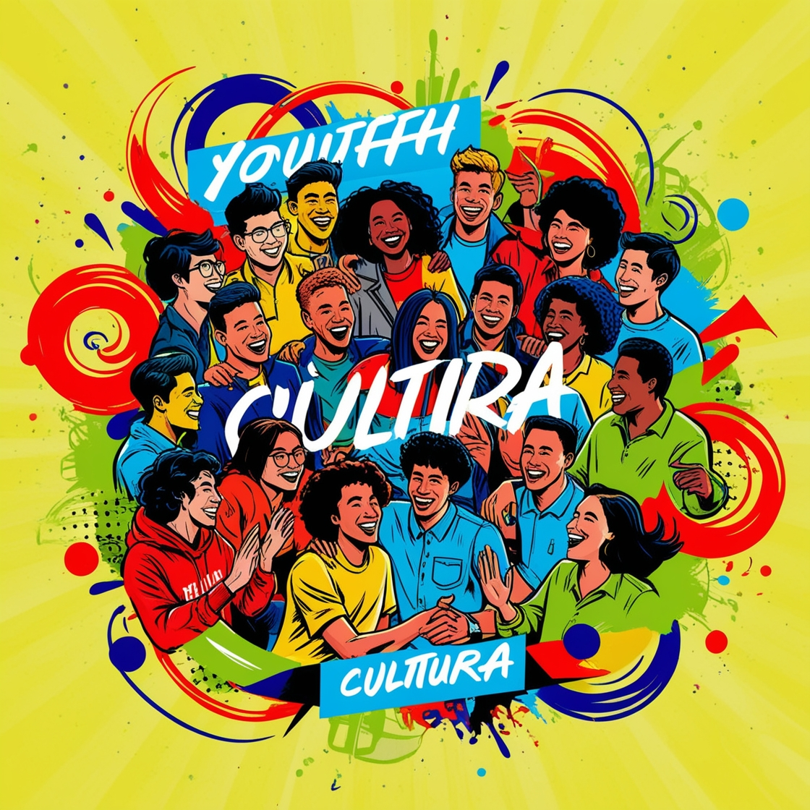

Bem vindos ao nosso site! Este projeto busca informar e conscientizar os leitores sobre a Seção VI do Estatuto da Juventude. Esse critério será alcançado através de uma dinâmica, que funcionará com uma leitura de um breve resumo informativo da seção, abordando cada um dos artigos, e então será apresentado um pequeno questionário para testar o conhecimento dos espectadores.
A Seção VI do Estatuto da Juventude assegura aos jovens o direito à cultura. Esse direito inclui a liberdade de criação, acesso a bens e serviços culturais, participação nas decisões sobre política cultural, valorização da identidade e diversidade cultural, e preservação da memória social.
Garante que os jovens tenham direito à cultura e possam criar livremente, acessar bens e serviços culturais,
participar das políticas culturais e valorizar a diversidade e a memória social.
Estabelece que o poder público deve:
Garante a meia-entrada para jovens de até 29 anos, estudantes e famílias de baixa renda em eventos culturais e esportivos.
Estipula que a Carteira de Identificação Estudantil (CIE) deve ser apresentada para comprovar o direito ao benefício,
e que a gratuidade na emissão da CIE é garantida para estudantes de baixa renda. A concessão do benefício da meia-entrada
de que trata o caput é limitada a dois quintos do total de ingressos disponíveis para cada evento.
Exemplo: Total de ingressos: 1000; concessão do benefício: 400
O poder público deve destinar recursos financeiros para fomentar projetos culturais destinados aos jovens.
Destina parte do Fundo Nacional da Cultura para atender às necessidades dos jovens,
promovendo o acesso à cultura e incentivando a produção cultural por jovens. Empresas e pessoas físicas podem destinar
parte do imposto de renda para apoiar projetos culturais juvenis.
Tá na hora de testar nossos conhecimentos! Responda as perguntas abaixo conforme o que você aprendeu.
A dificuldade das perguntas vai aumentando.
1. O que o artigo 21 garante aos jovens?
2. Qual é o benefício previsto no Art. 23
para jovens de até 29 anos e estudantes?
3. Qual documento deve ser apresentado para comprovar o direito à meia-entrada segundo o Art. 23?
4. Qual é o limite de ingressos disponíveis para meia-entrada em cada evento, conforme o Art. 23?
5. O que o poder público deve destinar aos projetos para jovens segundo o Art. 24?
6. O que as empresas e pessoas físicas podem fazer para apoiar projetos culturais juvenis segundo o Art. 25?
7. O que o poder público deve garantir
aos jovens segundo o artigo 22?
8. Verdadeiro ou falso:
"Segundo o artigo 22, o poder público deve ensinar sobre a diversidade cultural da América do Sul."